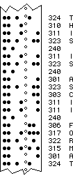
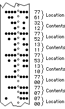
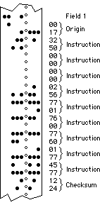

| Mnemonic Symbol |
Octal Code |
Description |
|---|---|---|
| RPE | 6010 | Set the interrupt enable mask for the punch and the reader. |
| RSF | 6011 | Skip the next instruction when the reader I/O flag is raised, i. e. when a new character is loaded into the reader buffer RBF. |
| RRB | 6012 | Read the content of the reader buffer RBF into AC (by performing a logical OR) and clear the reader I/O flag. |
| RFC | 6014 | Clear the reader I/O flag and RBF and start to fetch one character from the input tape to be loaded into RBF. The reader I/O flag is set again when the operation is completed. |
| RCC | 6016 | Load RBF into AC (by performing a logical OR), clear the reader I/O flag and RBF and start to read the next tape character. Microprogrammed combination of RRB and RFC. |
| PCE | 6020 | Clear the interrupt enable mask for the punch and the reader. |
| PSF | 6021 | Skip the next instruction when the punch I/O flag is set. |
| PCF | 6022 | Clear the punch I/O flag and the punch buffer PBF. |
| PPC | 6024 | Load the punch buffer from AC(4-11) (by performing a logical OR) and start to punch the character in PBF. (This instruction does not clear the PBF and the punch I/O flag.) |
| PLS | 6026 | Clear the punch I/O flag, clear PBF, load PBF from AC(4-11) and start to punch the character in PBF. The punch I/O flag is set again when the operation is complete. Microprogrammed combination of PCF and PPC. |
The IOTs RPE (6010), RCC (6016) and PCE (6020) are not available with older PDP-8 models (PDP-8, -8/S, -8/I, -8/L).
There are three basic paper tape formats commonly used in conjunction with the PDP-8 family of computers. The following paragraphs describe and illustrate these formats.
|  |
ASCII FormatThe ASCII format uses eight channels of the paper tape to represent a single character as shown in the diagram at left. Channel 8 is normally designated for parity check. The paper tape units of the PDP-8 family computers do not generate parity, and channel 8 is always punched. 377 (DEL, Rubout; all channels perforated) is used to “correct” typing errors and is ignored by paper tape rading programs. |
|  |
RIM (Read In Mode) FormatRIM format tape uses adjacent columns to represent 12-bit binary information directly. Channels 1 through 6 are used to represent either addresses or information to be stored. A channel 7 punch indicates that the adjacent column and the following column are to be interpreted as an address specifiying the location in which the information of the following two columns is to be stored. The tape leader and trailer of RIM format tape must be punched in channel 8 only (octal 200). |
|  |
BIN (Binary) FormatBIN format tape is similar to RIM format except that only the first address of consecutive locations is specified. An address is designated by a channel 7 punch, and information following an address is stored in sequential locations after the designated address until another location is specified as an origin. The tape leader and trailer of BIN format tape must be punched in channel 8 (octal 200) only. Field setting is designated by channel 8 and 7 punch plus a three digit field number in channels 4 through 6. The last two columns of a BIN format tape contain a checksum. The checksum is the sum (modulo 7777) of all preceding columns not containing a channel 8 punch (the field settings are not included in the checksum). When the BIN loader halts the PDP-8 with AC ≠ 0, then a checksum error occured while loading the tape. |